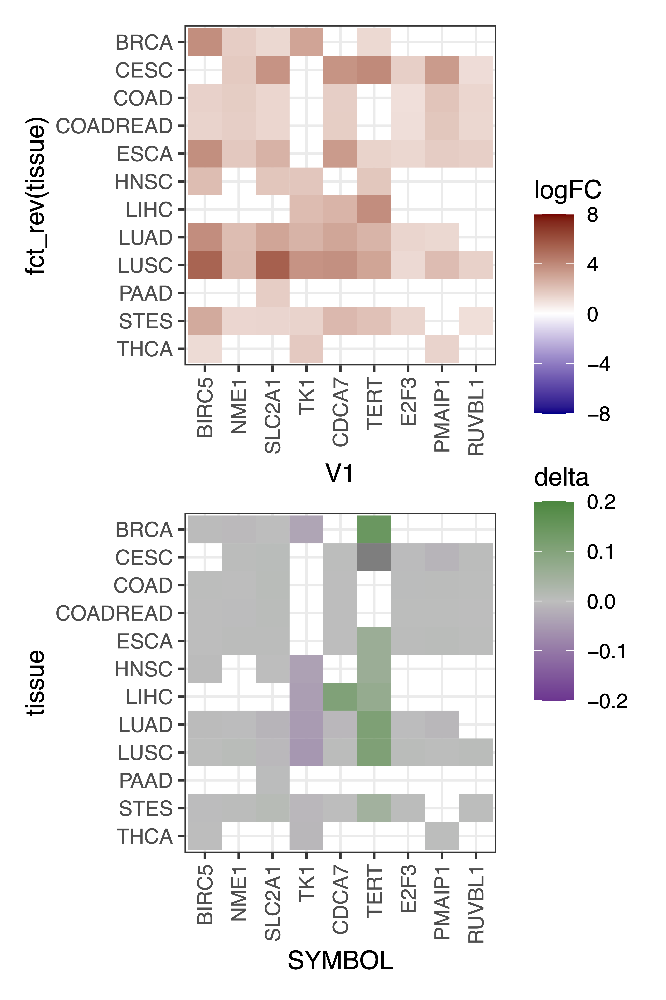
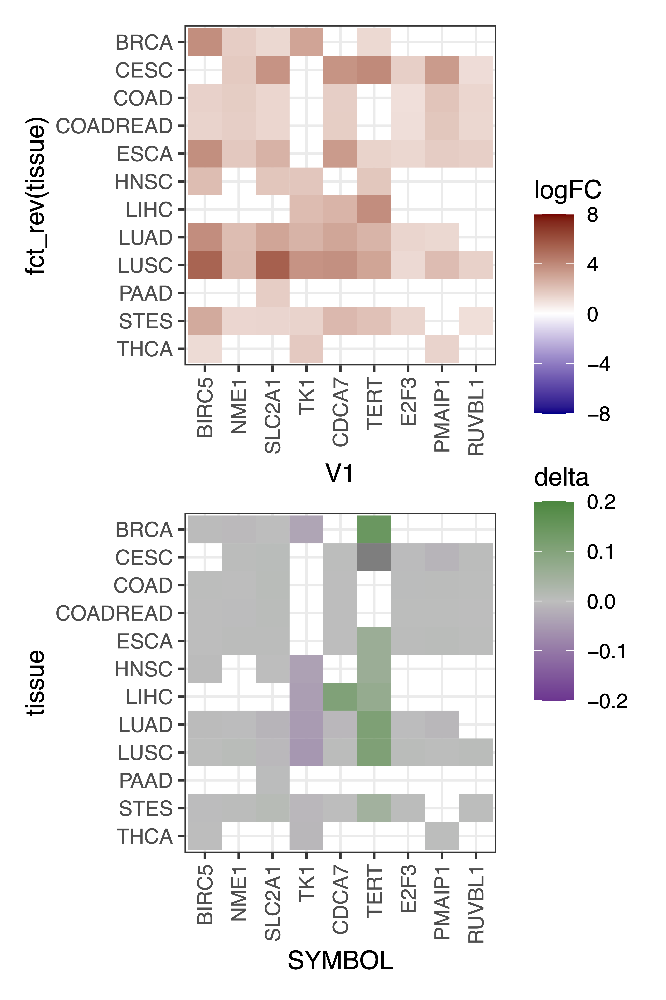

5 Figure 5
 Figure 5. MHBs are associated with differentially expressed genes in pan-cancer. (A) Enrichment of DMR-associated genes in differentially expressed genes. Statistical significance was evaluated using Fisher’s exact test. The resulting p-values were adjusted for multiple testing and reported as FDR. Upregulated genes and downregulated genes are labelled in red and blue, respectively. (B) Enrichment of cancer MHB-associated genes in differentially expressed genes. The forest plot shows the enrichment of cancer MHB-associated genes, excluding DMR-related genes, in DEGs. Statistical significance was evaluated using the Fisher’s exact test, with P-value < 0.05 labelled in red and P-value > 0.05 labelled in blue, respectively. (C) Pathway enrichment of MHB-associated genes in pan-cancer. An integrative prioritization approach utilizing network information (see Methods) was employed to prioritize MHB-related genes shared by more than six cancer types. The upper panel displays the gene set enrichment of shared upregulated genes. The bottom panel illustrates the differences in methylation and expression profiles of selected genes, annotated in the G2M checkpoint or MYC activity pathway across cancer types. Gene set enrichment analysis was performed using the hypergeometric test implemented in the clusterProfiler R/Bioconductor package, utilizing the “H” and “C2” gene sets from the Molecular Signatures Database v6.1 (MSigDB). (D) Two example MHBs located near genes activated in multiple cancer types: one in the MYC gene locus (chr8: 128,749,850 − 128,750,150) and the other in the SLC2A1 gene locus (chr1:43,423,000-43,423,600). The upper panel displays the mean methylation levels. The middle panel depicts the DNA methylation status of individual fragments, where black and white represent methylated and unmethylated CpG sites, respectively. The bottom panel shows the genomic position of the MHBs and adjacent genes, combined with a heatmap of signed linkage disequilibrium (LD) R² values in the region of interest. (E) Pathway crosstalk analysis for pan-cancer. The optimal subnetwork was identified by integrating the target priority rating information with pathway-derived gene interactions, which were merged from KEGG pathways. (F) The Kaplan-Meier survival curves compare overall survival (OS) between patient subgroups stratified by high/low expression (median cutoff) of RRM2 and SLC2A1 genes in CESC, LIHC, LUAD, PAAD of TCGA dataset. Statistical significance was assessed using the log-rank test. P-values were calculated using the log-rank test, and hazard ratios (HRs) were computed through univariable Cox regression analysis.
Figure 5. MHBs are associated with differentially expressed genes in pan-cancer. (A) Enrichment of DMR-associated genes in differentially expressed genes. Statistical significance was evaluated using Fisher’s exact test. The resulting p-values were adjusted for multiple testing and reported as FDR. Upregulated genes and downregulated genes are labelled in red and blue, respectively. (B) Enrichment of cancer MHB-associated genes in differentially expressed genes. The forest plot shows the enrichment of cancer MHB-associated genes, excluding DMR-related genes, in DEGs. Statistical significance was evaluated using the Fisher’s exact test, with P-value < 0.05 labelled in red and P-value > 0.05 labelled in blue, respectively. (C) Pathway enrichment of MHB-associated genes in pan-cancer. An integrative prioritization approach utilizing network information (see Methods) was employed to prioritize MHB-related genes shared by more than six cancer types. The upper panel displays the gene set enrichment of shared upregulated genes. The bottom panel illustrates the differences in methylation and expression profiles of selected genes, annotated in the G2M checkpoint or MYC activity pathway across cancer types. Gene set enrichment analysis was performed using the hypergeometric test implemented in the clusterProfiler R/Bioconductor package, utilizing the “H” and “C2” gene sets from the Molecular Signatures Database v6.1 (MSigDB). (D) Two example MHBs located near genes activated in multiple cancer types: one in the MYC gene locus (chr8: 128,749,850 − 128,750,150) and the other in the SLC2A1 gene locus (chr1:43,423,000-43,423,600). The upper panel displays the mean methylation levels. The middle panel depicts the DNA methylation status of individual fragments, where black and white represent methylated and unmethylated CpG sites, respectively. The bottom panel shows the genomic position of the MHBs and adjacent genes, combined with a heatmap of signed linkage disequilibrium (LD) R² values in the region of interest. (E) Pathway crosstalk analysis for pan-cancer. The optimal subnetwork was identified by integrating the target priority rating information with pathway-derived gene interactions, which were merged from KEGG pathways. (F) The Kaplan-Meier survival curves compare overall survival (OS) between patient subgroups stratified by high/low expression (median cutoff) of RRM2 and SLC2A1 genes in CESC, LIHC, LUAD, PAAD of TCGA dataset. Statistical significance was assessed using the log-rank test. P-values were calculated using the log-rank test, and hazard ratios (HRs) were computed through univariable Cox regression analysis.
5.1 (A-B). Enrichment of DMR or MHB-associated genes in DEGs
library(tidyverse)
library(stringr)
library(rGREAT)
library(regioneR)
library(data.table)
# 1. Load data
# 1.1 load TCGA CGI-DMR: HM450K_CGI_DMR
load("TCGA_DMR/HM450K_TCGA_CGI_DMR_GR.RData")
# 1.2 load TCGA DEGs: TCGA_DE_res
load("TCGA/Exp/res/TCGA_DE_res.RData")
# 1.3 Load MHB
mhb_path="Data/Processed_data/MHB/tumor/"
mhb <- list.files(mhb_path)
MHB.GR <- lapply(mhb,function(x){toGRanges(paste0(mhb_path,x))})
names(MHB.GR) <- str_split_i(mhb,"\\.",i=1) %>% str_split_i("_",i=2)
# 1.4 rGREAT annotation
rGREAT_genes <- fread("Data/Processed_data/GREATv4.genes.promoter_UD1000.hg19.bed")
# 2. DMR vs DEGs
id.methyl <- names(mcols(HM450K_CGI_DMR)) %>% setdiff("OV")
DMEG <- lapply(id.methyl,function(x){
# 1. CGI-DMR
test <- HM450K_CGI_DMR[,x]
colnames(mcols(test))<-"Type"
DMgene <- subset(test) %>% great(cores=10,"msigdb:H", "GREAT:hg19") %>% getRegionGeneAssociations() %>%
as.data.frame() %>% mutate(annotated_genes=lapply(annotated_genes,function(x){
x %>% paste(collapse=",")
}) %>% do.call(rbind,.) %>% as.character(),
dist_to_TSS = lapply(dist_to_TSS,function(x){
x %>% paste(collapse=",")
}) %>% do.call(rbind,.) %>% as.character()) %>%
separate_rows(annotated_genes,dist_to_TSS,sep=",",convert=TRUE) %>%
as.data.frame() %>%
filter(abs(dist_to_TSS)<=1000) %>% ### restrict to promoter regions TSS+/- 1K
group_by(annotated_genes) %>%
summarise(annotated_genes=annotated_genes,Type=paste0(unique(Type),collapse=",")) %>%
distinct() %>% filter(!str_detect(Type,","))
# 2. DEGs
if(x=="PDAC"){
Eid = "PAAD"
}else {
Eid = x
}
DEG <- TCGA_DE_res %>% dplyr::select(c("gene",Eid)) %>% dplyr::rename(Type=2)
#######
# 2 Fisher exact test
## Hypo ~ Up
# Hypo + up
aa1 <- DMgene %>% filter(Type=="Hypo") %>% pull(annotated_genes) %>% intersect(DEG %>% filter(Type %in% "Up") %>% pull(gene)) %>% length()
# Hypo + NC
bb1 <- DMgene %>% filter(Type=="Hypo") %>% pull(annotated_genes) %>% intersect(DEG %>% filter(Type %in% "NC") %>% pull(gene) ) %>% length()
# NC + Up
cc1 <- DMgene %>% filter(Type=="NC") %>% pull(annotated_genes) %>% intersect(DEG %>% filter(Type %in% "Up") %>% pull(gene) ) %>% length()
# NC + NC
dd1 <- DMgene %>% filter(Type=="NC") %>% pull(annotated_genes) %>% intersect(DEG %>% filter(Type %in% "NC") %>% pull(gene) ) %>% length()
## Hyper ~ DN
# Hyper + DN
aa2 <- DMgene %>% filter(Type=="Hyper") %>% pull(annotated_genes) %>% intersect(DEG %>% filter(Type %in% "Down") %>% pull(gene)) %>% length()
# Hyper + NC
bb2 <- DMgene %>% filter(Type=="Hyper") %>% pull(annotated_genes) %>% intersect(DEG %>% filter(Type %in% "NC") %>% pull(gene) ) %>% length()
# NC + DN
cc2 <- DMgene %>% filter(Type=="NC") %>% pull(annotated_genes) %>% intersect(DEG %>% filter(Type %in% "Down") %>% pull(gene) ) %>% length()
# NC + NC
dd2 <- DMgene %>% filter(Type=="NC") %>% pull(annotated_genes) %>% intersect( DEG %>% filter(Type %in% "NC") %>% pull(gene)) %>% length()
## Hyper ~ UP
# Hyper + UP
aa3 <- DMgene %>% filter(Type=="Hyper") %>% pull(annotated_genes) %>% intersect(DEG %>% filter(Type %in% "Up") %>% pull(gene)) %>% length()
# Hyper + NC
bb3 <- DMgene %>% filter(Type=="Hyper") %>% pull(annotated_genes) %>% intersect(DEG %>% filter(Type %in% "NC") %>% pull(gene) ) %>% length()
# NC + UP
cc3 <- DMgene %>% filter(Type=="NC") %>% pull(annotated_genes) %>% intersect(DEG %>% filter(Type %in% "Up") %>% pull(gene) ) %>% length()
# NC + NC
dd3 <- DMgene %>% filter(Type=="NC") %>% pull(annotated_genes) %>% intersect( DEG %>% filter(Type %in% "NC") %>% pull(gene)) %>% length()
## Hypo ~ DN
# Hypo + DN
aa4 <- DMgene %>% filter(Type=="Hypo") %>% pull(annotated_genes) %>% intersect(DEG %>% filter(Type %in% "Down") %>% pull(gene)) %>% length()
# Hyper + NC
bb4 <- DMgene %>% filter(Type=="Hypo") %>% pull(annotated_genes) %>% intersect(DEG %>% filter(Type %in% "NC") %>% pull(gene) ) %>% length()
# NC + DN
cc4 <- DMgene %>% filter(Type=="NC") %>% pull(annotated_genes) %>% intersect(DEG %>% filter(Type %in% "Down") %>% pull(gene) ) %>% length()
# NC + NC
dd4 <- DMgene %>% filter(Type=="NC") %>% pull(annotated_genes) %>% intersect( DEG %>% filter(Type %in% "NC") %>% pull(gene)) %>% length()
# res
Hypo_Up <- fisher.test(matrix(c(aa1,bb1,cc1,dd1),ncol=2,nrow=2)) %>% broom::tidy() %>% mutate(A=aa1,B=bb1,C=cc1,D=dd1,Type="Hypo_Up")
Hypo_DN<- fisher.test(matrix(c(aa4,bb4,cc4,dd4),ncol=2,nrow=2)) %>% broom::tidy() %>% mutate(A=aa4,B=bb4,C=cc4,D=dd4,Type="Hypo_DN")
Hyper_DN <- fisher.test(matrix(c(aa2,bb2,cc2,dd2),ncol=2,nrow=2)) %>% broom::tidy() %>% mutate(A=aa2,B=bb2,C=cc2,D=dd2,Type="Hyper_DN")
Hyper_UP <- fisher.test(matrix(c(aa3,bb3,cc3,dd3),ncol=2,nrow=2)) %>% broom::tidy() %>% mutate(A=aa3,B=bb3,C=cc3,D=dd3,Type="Hyper_UP")
res <- rbind(Hypo_Up,Hypo_DN,Hyper_DN,Hyper_UP)
})
names(DMEG) <- id.methyl
res_DMEG <- do.call(rbind,DMEG) %>% mutate(tissue=rep(id.methyl,each=5),logFDR=-log10(p.adjust(p.value,method="fdr",length(p.value))))
# 3. MHB (remove DMR) vs DEGs
id.com <- c("BRCA","COAD","ESCA","COADREAD","HNSC","LIHC","LUAD","LUSC","STES","THCA","PDAC","CESC")
nonDM <- lapply(id.com,function(x){
# 1.DMR
test <- HM450K_CGI_DMR[,x]
colnames(mcols(test))<-"Type"
DMgene <- subset(test) %>% great(cores=10,"msigdb:H", "GREAT:hg19") %>% getRegionGeneAssociations() %>%
as.data.frame() %>% mutate(annotated_genes=lapply(annotated_genes,function(x){
x %>% paste(collapse=",")
}) %>% do.call(rbind,.) %>% as.character(),
dist_to_TSS = lapply(dist_to_TSS,function(x){
x %>% paste(collapse=",")
}) %>% do.call(rbind,.) %>% as.character()) %>%
separate_rows(annotated_genes,dist_to_TSS,sep=",",convert=TRUE) %>%
as.data.frame() %>%
filter(abs(dist_to_TSS)<=1000) %>% ### restrict to promoter regions TSS+/- 1K
group_by(annotated_genes) %>%
summarise(annotated_genes=annotated_genes,Type=paste0(unique(Type),collapse=",")) %>%
distinct() %>% filter(!str_detect(Type,","))
NoDMG <- DMgene %>% filter(Type == "NC") %>% pull(annotated_genes)
# 2.DEG
if(x=="PDAC"){
Eid = "PAAD"
}else {
Eid = x
}
DEG <- TCGA_DE_res %>% dplyr::select(c("gene",Eid)) %>% dplyr::rename(Type=2) %>% filter(Type %in% c("Up","Down"))
Exp_NC <- TCGA_DE_res %>% dplyr::select(c("gene",Eid)) %>% dplyr::rename(Type=2) %>% filter(Type %in% "NC")
# Non DMR + DEG
nonDM.DEG <- DEG %>% filter(gene %in% NoDMG)
# 3. MHB
if(x=="PDAC"){
MHBid = "PACA"
}else if(x=="COADREAD") {
MHBid = "COAD"
}else if(x=="LUSC" | x =="LUAD"){
MHBid = "NSCLC"
}else if (x=="STES") {
MHBid = "STAD"
}else{
MHBid = x
}
data <- MHB.GR[[MHBid]]
if (!is.null(data)){
MHGenes <- data %>% great(cores=10,"msigdb:H", "GREAT:hg19") %>% getRegionGeneAssociations() %>%
as.data.frame() %>% mutate(annotated_genes=lapply(annotated_genes,function(x){
x %>% paste(collapse=",")
}) %>% do.call(rbind,.) %>% as.character(),
dist_to_TSS = lapply(dist_to_TSS,function(x){
x %>% paste(collapse=",")
}) %>% do.call(rbind,.) %>% as.character()) %>%
separate_rows(annotated_genes,dist_to_TSS,sep=",",convert=TRUE) %>%
as.data.frame() %>%
pull(annotated_genes) %>% unique()
# fisher test in NonDMR regions
# MHB vs DEGs
aa <- intersect(MHGenes,nonDM.DEG %>% pull(gene)) %>% length()
bb <- intersect(MHGenes,NoDMG) %>% intersect(Exp_NC %>% pull(gene)) %>% length()
cc <- setdiff(NoDMG,MHGenes) %>% intersect(DEG %>% pull(gene)) %>% length()
dd <- setdiff(NoDMG,MHGenes) %>% intersect(Exp_NC %>% pull(gene)) %>% length()
##genes
res <- intersect(MHGenes,nonDM.DEG %>% pull(gene))
##MHB vs Up
aa1 <- nonDM.DEG %>% filter(gene %in% MHGenes,Type=="Up") %>% nrow()
bb1 <- intersect(MHGenes,NoDMG) %>% intersect(Exp_NC %>% pull(gene)) %>% length()
cc1<- nonDM.DEG %>% filter(!(gene %in% MHGenes),Type=="Up") %>% nrow()
dd1 <- setdiff(NoDMG,MHGenes) %>% intersect(Exp_NC %>% pull(gene)) %>% length()
##genes
res1 <- nonDM.DEG %>% filter(gene %in% MHGenes,Type=="Up") %>% pull(gene)
# MHB vs DN
aa2 <- nonDM.DEG %>% filter(gene %in% MHGenes,Type=="Down") %>% nrow()
bb2 <- intersect(MHGenes,NoDMG) %>% intersect(Exp_NC %>% pull(gene)) %>% length()
cc2 <- nonDM.DEG %>% filter(!(gene %in% MHGenes),Type=="Down") %>% nrow()
dd2 <- setdiff(NoDMG,MHGenes) %>% intersect(Exp_NC %>% pull(gene)) %>% length()
##genes
res2 <- nonDM.DEG %>% filter(gene %in% MHGenes,Type=="Down") %>% pull(gene)
# UP vs DN (MHB genes)
aa3 <- nonDM.DEG %>% filter(gene %in% MHGenes,Type=="Up") %>% nrow()
bb3 <- nonDM.DEG %>% filter(gene %in% MHGenes,Type=="Down") %>% nrow()
cc3 <- nonDM.DEG %>% filter(!(gene %in% MHGenes),Type=="Up") %>% nrow()
dd3 <- nonDM.DEG %>% filter(!(gene %in% MHGenes),Type=="Down") %>% nrow()
# genes
res3 <- nonDM.DEG %>% filter(gene %in% MHGenes,Type=="Down") %>% pull(gene)
signif1 <- fisher.test(matrix(c(aa,bb,cc,dd),ncol=2,nrow=2)) %>% broom::tidy() %>% mutate(A=aa,B=bb,C=cc,D=dd,Type="NonDMR.MHB.DEG",NonDMR.MHB.DEG= paste0(res,collapse=","))
signif2 <- fisher.test(matrix(c(aa1,bb1,cc1,dd1),ncol=2,nrow=2)) %>% broom::tidy() %>% mutate(A=aa1,B=bb1,C=cc1,D=dd1,Type="NonDMR.MHB.UP",NonDMR.MHB.DEG= paste0(res1,collapse=","))
signif3 <- fisher.test(matrix(c(aa2,bb2,cc2,dd2),ncol=2,nrow=2)) %>% broom::tidy() %>% mutate(A=aa2,B=bb2,C=cc2,D=dd2,Type="NonDMR.MHB.DN",NonDMR.MHB.DEG= paste0(res2,collapse=","))
signif4 <- fisher.test(matrix(c(bb3,aa3,dd3,cc3),ncol=2,nrow=2)) %>% broom::tidy() %>% mutate(A=aa3,B=bb3,C=cc3,D=dd3,Type="NonDMR.MHB.DN.UP",NonDMR.MHB.DEG= paste0(res3,collapse=","))
rbind(signif1,signif2,signif3,signif4)
}
})
names(nonDM) <- id.com
res_nonDM <- do.call(rbind,nonDM) %>% mutate(tissue=rep(id.com,each=4))
# PLOT
library(patchwork)
library(ggplot2)
# DMRs vs DEGs
pdf(file="Data/Figures/Fig5/Fig5.A.pdf",width=11,height=8)
res1 <- res_DMEG %>% filter(Type!="Total") %>%
mutate(logFDR = ifelse(logFDR>20,20,logFDR),
DM = str_split_i(Type,"_",i=1),
DE = toupper(str_split_i(Type,"_",i=2))) %>%
filter(tissue %in% id.com )
p1<- ggplot(res1,
aes(x=logFDR,y=fct_rev(tissue),fill=DE)) +
geom_bar(stat="identity", position=position_dodge()) +
scale_fill_brewer(palette="Set1",direction=-1) +
geom_vline(aes(xintercept = 1.3),color="gray",linetype="dashed", size = 0.5)+
xlab('-log10(FDR)') + ylab(" ") +
theme_classic() +
theme(legend.position = "top",
axis.text = element_text(size=15,color="black"),
axis.title.x = element_text(size=20,color="black"),
axis.ticks.length=unit(0.2, "cm") ) +
facet_wrap(~DM,scale="free")
print(p1)
dev.off()
# MHBs(nonDMR) vs DEGs
pdf(file="Data/Figures/Fig5/Fig5.B.pdf",width=11,height=6)
res3 <- res_nonDM %>% filter(Type=="NonDMR.MHB.UP" | Type=="NonDMR.MHB.DN") %>%
mutate(logP=-log10(p.value),
logFDR=-log10(p.adjust(p.value,method="fdr",length(p.value))),
logFDR = ifelse(logFDR>8,8,logFDR),
DE = fct_inorder(str_split_i(Type,"\\.",i=3)),
signif = ifelse(logP>1.3,"1","0"))
p3<- ggplot(res3,aes(x=estimate,y=fct_rev(tissue),col=signif)) +
geom_point(aes(size=4,col=signif),shape=18) +
geom_errorbarh(aes(xmax = conf.high, xmin = conf.low), height = 0,size=1)+
scale_color_brewer(palette="Set1",direction=-1) +
geom_vline(aes(xintercept = 1),color="gray",linetype="dashed", size = 0.5)+
scale_x_continuous(limits=c(0.1, 3.2), breaks = seq(0, 3.5, 0.5))+
xlab('Odds Ratio') + ylab(" ") +
theme_classic() +
theme(legend.position = "top",
axis.text = element_text(size=15,color="black"),
axis.title.x = element_text(size=20,color="black"),
axis.ticks.length=unit(0.2, "cm") ) +
facet_wrap(~DE,scale="free_y")
print(p3)
dev.off()

5.1: Fig5.A-B
5.2 (C). Pathway enrichment of MHB-associated genes in pan-cancer
# Network-based data integration for prioritizing MHB-related genes in pan-cancer
# Input: Log2FC & FDR of MHB-related genes in pan-cancer between normal and tumor.
library(PIL)
library(openxlsx)
# specify built-in data placeholder
placeholder <- "http://www.comptransmed.pro/bigdata_ctm"
# load Preprocessed data and get summary data (2 column)
## RNA-seq : Pan-cancer
RNA.files <- list.files(pattern="_FC.txt") %>% str_split_i("_",i=1)
ls_df_res <-lapply(RNA.files,function(x){
fread(paste0(x,"_MHB_NonDMR_DEGs_FC.txt")) %>%
mutate(wFC=-log10(FDR)*abs(logFC)) %>%
select(V1,wFC) %>% rename(gene=V1) %>%
arrange(-wFC) %>% as_tibble()
})
names(ls_df_res) <- RNA.files
# define high-quality protein interaction network: KEGG or STRING
if(1){
network.customised <- oDefineNet(network="KEGG",
placeholder=placeholder) %>%
igraph::as.undirected()
}else{
network.customised <- oDefineNet(network="STRING_high",
STRING.only=c("experimental_score",
"database_score"),
placeholder=placeholder)
}
# All known genes (primarily sourced from UCSC)
guid <- NULL
if(1){
GR.Gene <- oRDS("UCSC_knownGene", placeholder=placeholder, guid=guid)
if(1){
gene_info <- oRDS("org.Hs.eg",placeholder=placeholder, guid=guid)$info
ind <- match(names(GR.Gene), gene_info$Symbol)
GR.Gene <- GR.Gene[!is.na(ind)]
}
## remove gene at chrX and chrY
if(0){
df <- as.data.frame(GR.Gene) %>% as_tibble()
ind <- which(!(df$seqnames %in% c('chrX','chrY')))
GR.Gene <- GR.Gene[ind]
}
## restricted to GR.Gene filter the node
network.customised <- network.customised %>%
oNetInduce(nodes_query=names(GR.Gene),
largest.comp=F)
}
# ls_pNode: prepare predictors
ls_pNode <- pbapply::pblapply(ls_df_res, function(x){
pNode <- x %>% as.data.frame() %>%
oPierAnno(list_pNode=NULL,
network.customised = network.customised,
placeholder=placeholder, guid=guid)
})
# do prioritisation
dTarget <- oPierMatrix(ls_pNode, displayBy="pvalue", aggregateBy="fishers",
placeholder=placeholder, guid=guid)
# dT: restricted to GR.Gene and rating>0
df_GR_gene <- GR.Gene %>% as.data.frame() %>% as_tibble()
dT <- dTarget
dT$priority <- dTarget$priority %>% filter(rating>0) %>%
semi_join(df_GR_gene, by=c('name'='Symbol')) %>% dplyr::mutate(rank=seq(n()))
dT$predictor <- dTarget$predictor[dT$priority %>% pull(name),]
# output
dT$priority %>% openxlsx::write.xlsx("PI_Priority_mhb.xlsx")
# 1. load MHB.DEG.NonDMR genes
rna_path <- "TCGA/Exp/res/"
rna.files <- list.files(rna_path,pattern="TCGA_DEG_")
rna.log2fc <- lapply(rna.files,function(x){fread(paste0(rna_path,x)) %>%
dplyr::select(1,3,4) %>%
mutate(DE=ifelse(FDR<=0.05 & logFC >=1,"up",
ifelse(FDR<=0.05 & logFC <= -1, "down","NC")))})
names(rna.log2fc) <- rna.files %>% str_split_i("\\.",i=1) %>% str_split_i("_",i=3)
# MHB_NonDMR.DEG
MHB_NonDMR.DEG <- read_gmt("TCGA_Pathway/DEG.MHB.NonDM.gmt")
MHB_NonDMR.DEG.FC <- lapply(names(MHB_NonDMR.DEG),function(x){
if(x=="PDAC"){
y="PAAD"
}else{
y=x
}
rna.log2fc[[y]] %>% filter(V1 %in% MHB_NonDMR.DEG[[x]]) %>% mutate(DE=ifelse(logFC>0,"up","down"),tissue=x)
})
names(MHB_NonDMR.DEG.FC) <- names(MHB_NonDMR.DEG) %>% str_replace_all("PDAC","PAAD")
# 2. Load pi ranking results
seed.genes <- read.xlsx("PI_Priority_mhb.xlsx")
cancer_type <- names(seed.genes)[-c(1:5)]
network_genes <- lapply(cancer_type,function(x){
seed.genes %>% select(name,rank,x) %>% rename_with(~c("name","rank","seed")) %>% filter(seed==1)
})
names(network_genes) <- cancer_type %>% str_replace_all("PDAC","PAAD")
# RNA + NoMHB
rna.log2fc.pi <- MHB_NonDMR.DEG.FC[names(network_genes)]
rna.log2fc.pi.rank <- lapply(names(network_genes),function(x){
rna.log2fc.pi[[x]] %>% dplyr::rename(name=V1) %>%
inner_join(network_genes[[x]],by="name") %>%
arrange(rank)
})
names(rna.log2fc.pi.rank) <- names(network_genes)
res <- do.call(rbind,rna.log2fc.pi.rank) %>% as.data.frame() %>% group_by(name,rank) %>%
summarise(tissue_count = n(),
tissue = paste0(tissue,collapse=","),
FC = paste0(DE,collapse=","),
DE = paste0(unique(DE),collapse=",")) %>%
arrange(rank,desc(tissue_count))
fwrite(res,file="DEG.MHB.NoDMR.Pi.ranking.txt",sep="\t",quote= F,row.names=F)
# showing top 500
up_rank <- res %>% filter(DE=="up") %>% head(500)
down_rank <- res %>% filter(DE=="down") %>% head(500)
library(ggplot2)
library(patchwork)
pdf(file="NoDMR.MHB.DEG.Pi.ranking.pdf",width=8,height=6)
p1 <- ggplot(up_rank,aes(x=fct_inorder(name),y=tissue_count)) +
geom_bar(stat="identity",fill="firebrick") +
scale_y_continuous(expand=c(0,0),limits=c(0,12)) +
labs(x="",y="Number of tissue") +
theme_classic() +
theme(axis.text.x = element_text(angle = 90))
p2 <- ggplot(down_rank,aes(x=fct_inorder(name),y=tissue_count)) +
geom_bar(stat="identity",fill="steelblue") +
scale_y_continuous(expand=c(0,0),limits=c(0,12)) +
labs(x="",y="Number of tissue") +
theme_classic() +
theme(axis.text.x = element_text(angle = 90))
p<- wrap_plots(list(p1,p2),ncol=1,nrow=2) + plot_layout(guides = 'collect')
print(p)
dev.off()
5.2: Fig5.S
# 3. Enrichment
library(clusterProfiler)
library(msigdbr)
## Here we use C2 & H gene sets as an example:
m_t2g <- msigdbr(species = "Homo sapiens", category = "C2") %>%
filter(!(gs_subcat %in% c("CGP","CP"))) %>%
dplyr::select(gs_name, entrez_gene)
m_t2g1 <- msigdbr(species = "Homo sapiens", category = "H") %>%
dplyr::select(gs_name, entrez_gene)
# merging
m_t2g <- rbind(m_t2g1,m_t2g)
# convert : the existence of genes more than 6 tissues.
up_freq <- res %>% filter(DE=="up") %>% filter(tissue_count>=6)
genes = bitr(up_freq$name,
fromType="SYMBOL",
toType="ENTREZID",
OrgDb="org.Hs.eg.db")
universe = read_gmt("KEGG_genes.gmt",
from="SYMBOL",
to = "ENTREZ",
orgdb="org.Hs.eg.db")
em <- enricher(genes$ENTREZID, TERM2GENE=m_t2g,pAdjustMethod= "BH",universe=universe$KEGG,) %>% as.data.frame()
p <- em %>% filter(ID %in% c("HALLMARK_E2F_TARGETS","HALLMARK_G2M_CHECKPOINT","PID_MYC_ACTIV_PATHWAY")) %>%
ggplot(aes(x=-log10(p.adjust),y=fct_rev(ID))) +
geom_bar(stat="identity",fill="orange") +
scale_x_continuous(expand=c(0,0),position="top",
limits=c(0,25),
breaks=seq(0,25,5)) +
scale_y_discrete(labels= function(x) str_wrap(x,width=45)) +
labs(y="",x="-log10(FDR)") +
geom_vline(aes(xintercept = 2),color="gray",linetype="dashed", size = 0.5)+
theme_bw() +
theme(panel.background=element_blank(),
panel.grid=element_blank())
ggsave(p,file="Data/Figures/Fig5/Fig5.C1.pdf",width=5,height=2)
# 4. LogFC and delta beta value of target genes
# RNA MHB_NonDMR.DEG
## G2M
Genes.G2M <- em %>% filter(ID =="HALLMARK_G2M_CHECKPOINT" ) %>% pull(geneID) %>% str_split_1("/") %>% bitr(fromType="ENTREZID",toType="SYMBOL",OrgDb="org.Hs.eg.db") %>% pull(SYMBOL) %>% c("MYC")
Genes.MYC <- em %>% filter(ID =="PID_MYC_ACTIV_PATHWAY" ) %>% pull(geneID) %>% str_split_1("/") %>% bitr(fromType="ENTREZID",toType="SYMBOL",OrgDb="org.Hs.eg.db") %>% pull(SYMBOL)
rna.log2FC.G2M <- lapply(names(MHB_NonDMR.DEG.FC),function(x){
MHB_NonDMR.DEG.FC[[x]] %>%
filter(V1 %in% Genes.G2M) %>%
mutate(tissue=x) })
names(rna.log2FC.G2M) <- names(MHB_NonDMR.DEG.FC)
## MYC
rna.log2FC.MYC <- lapply(names(MHB_NonDMR.DEG.FC),function(x){
MHB_NonDMR.DEG.FC[[x]] %>%
filter(V1 %in% Genes.MYC) %>%
mutate(tissue=x) })
names(rna.log2FC.MYC) <- names(MHB_NonDMR.DEG.FC)
# DNA methylation MHB_NonDMR.DEG
load("TCGA/DNAm_Array/TCGA_TSS_UD1K_Methylation.RData")
Mregion <- fread("Data/Processed_data/GREATv4.genes.promoter_UD1000.hg19.bed") %>%
dplyr::rename("name"="V5") %>% toGRanges()
MP.TvN <- pbapply::pblapply(names(rList),function(x){
##id
sample <- rList[[x]] %>% colnames() %>% str_split_i("-",i=4)
sample <- ifelse(str_detect(sample,"11"),"Normal","Tumor")
## data table
data <- rList[[x]] %>% as.data.frame()
names(data) <- paste0(names(data),"_",sample)
data %>% summarise(MP.T = rowMeans(across(contains("Tumor")),na.rm=T),
MP.N = rowMeans(across(contains("Normal")),na.rm=T)) %>%
dplyr::select(MP.T,MP.N) %>%
mutate(SYMBOL = Mregion$name)
})
names(MP.TvN) <- names(rList)
## G2M
DNAme.G2M <- lapply(names(MHB_NonDMR.DEG.FC),function(x){
MP.TvN[[x]] %>%
filter(SYMBOL %in% rna.log2FC.G2M[[x]]$V1 ) %>%
mutate(tissue=x) })
names(DNAme.G2M) <- names(MHB_NonDMR.DEG.FC)
## MYC
DNAme.MYC <- lapply(names(MHB_NonDMR.DEG.FC),function(x){
MP.TvN[[x]] %>%
filter(SYMBOL %in% rna.log2FC.MYC[[x]]$V1 ) %>%
mutate(tissue=x) })
names(DNAme.MYC) <- names(MHB_NonDMR.DEG.FC)
### RES
res_logfc.g2m <- do.call(rbind,rna.log2FC.G2M) %>% as.data.frame() %>%
mutate(V1=factor(V1,levels=seed.genes$name))
res_logfc.myc <- do.call(rbind,rna.log2FC.MYC) %>% as.data.frame() %>%
mutate(V1=factor(V1,levels=seed.genes$name))
##
res_DNAme.g2m <- do.call(rbind,DNAme.G2M) %>% as.data.frame() %>%
mutate(SYMBOL=factor(SYMBOL,levels=seed.genes$name))
res_DNAme.myc <- do.call(rbind,DNAme.MYC) %>% as.data.frame() %>%
mutate(SYMBOL=factor(SYMBOL,levels=seed.genes$name))
# PLOT
## RNA
p1 <- res_logfc.g2m %>% ggplot(aes(x=V1,y=fct_rev(tissue))) +
geom_tile(aes(fill=logFC)) +
scale_fill_gradientn(colours = c("darkblue","white","darkred"),
limits=c(-8, 8), breaks = seq(-8, 8, 4)) +
theme_bw() +
theme( axis.text.x = element_text(angle = 90,hjust=1,vjust=0.5),
panel.background =element_blank())
p12 <- res_logfc.myc %>% ggplot(aes(x=V1,y=fct_rev(tissue))) +
geom_tile(aes(fill=logFC)) +
scale_fill_gradientn(colours = c("darkblue","white","darkred"),
limits=c(-8, 8), breaks = seq(-8, 8, 4)) +
theme_bw() +
theme(axis.text.x = element_text(angle = 90,hjust=1,vjust=0.5),
panel.background =element_blank())
## DNAme
data1 <- res_DNAme.g2m %>%
mutate(delta = MP.T - MP.N,tissue=fct_rev(tissue))
p21 <- data1 %>% ggplot(aes(x=SYMBOL,y=tissue)) +
geom_tile(aes(fill=delta)) +
scale_fill_gradientn(colours = c('#7b3294','grey','#008837'),
limits=c(-0.2, 0.2), breaks = seq(-0.2, 0.2, 0.1)) +
theme_bw() +
theme(axis.text.x = element_text(angle = 90,hjust=1,vjust=0.5),
panel.background =element_blank())
data2 <- res_DNAme.myc %>%
mutate(delta = MP.T - MP.N,tissue=fct_rev(tissue))
p22 <- data2 %>% ggplot(aes(x=SYMBOL,y=tissue)) +
geom_tile(aes(fill=delta)) +
scale_fill_gradientn(colours = c('#7b3294','grey','#008837'),
limits=c(-0.2, 0.2), breaks = seq(-0.2, 0.2, 0.1)) +
theme_bw() +
theme(axis.text.x = element_text(angle = 90,hjust=1,vjust=0.5),
panel.background =element_blank())
library(patchwork)
p<- wrap_plots(list(p1,p12,p21,p22),ncol=2,nrow=2) + plot_layout(guides = 'collect')
ggsave(p,file="Data/Figures/Fig5/Fig5.C.pdf",width=7.5,height=6) 

5.3: Fig5.C
5.3 (E). KEGG Pathway crosstalk analysis for pan-cancer
# define KEGG-merged gene interaction network
ig.KEGG.category <- oRDS('ig.KEGG.category', placeholder=placeholder, guid=guid)
vec_categories <- ig.KEGG.category %>% pull(category) %>% str_replace(' ','') %>% str_c('KEGGc_',.)
ls_ig <- lapply(vec_categories, function(network){
g <- oDefineNet(network=network, placeholder=placeholder, guid=guid)
})
ig <- oCombineNet(ls_ig, combineBy='union', attrBy="intersect", verbose=TRUE)
ig2 <- oNetInduce(ig, nodes_query=V(ig)$name, largest.comp=T) %>% as.undirected()
# crosstalk identification
subg <- oPierSubnet(dT, network.customised=ig2, priority.quantile= 0.1,
subnet.size=50, placeholder=placeholder, guid=guid)
df_subg <- dT$priority %>% inner_join(oIG2TB(subg,'nodes') %>% dplyr::select(name), by='name')
df_subg %>% openxlsx::write.xlsx('PI_subg_nodes_mhb.xlsx')
# output plot: oVisEvidenceAdv
subg <- subg %>% oLayout(c("layout_with_kk","graphlayouts.layout_with_stress")[2])
gp_rating_evidence <- oVisEvidenceAdv(dT, nodes=V(subg)$name, g=subg,
node.info="smart", colormap="spectral.top",
node.color.alpha=0.8, node.size.range=7,
edge.color='black', edge.color.alpha=0.2, edge.curve=0.01,
node.label.size=2.5, node.label.color='black',
node.label.alpha=0.8, node.label.padding=0.1,
node.label.arrow=0, node.label.force=1)
ggsave("Data/Figures/Fig5/Fig5.E.pdf", gp_rating_evidence, width=9, height=6.5) 
5.4: Fig5.E